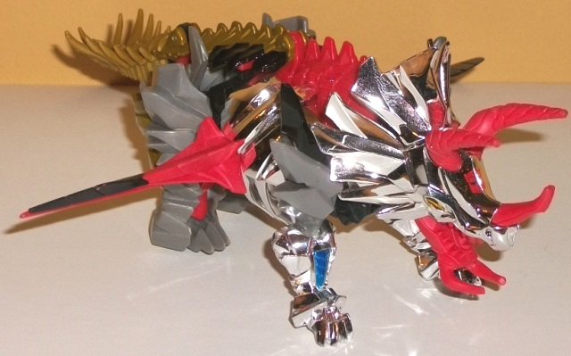
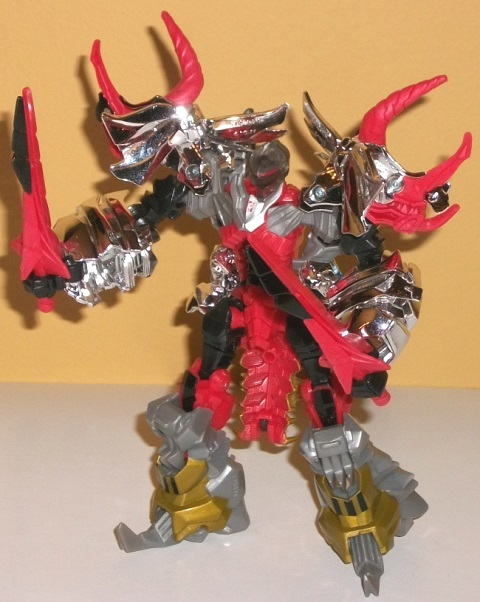
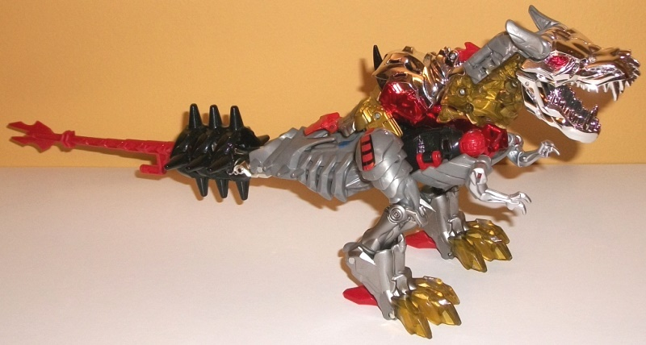
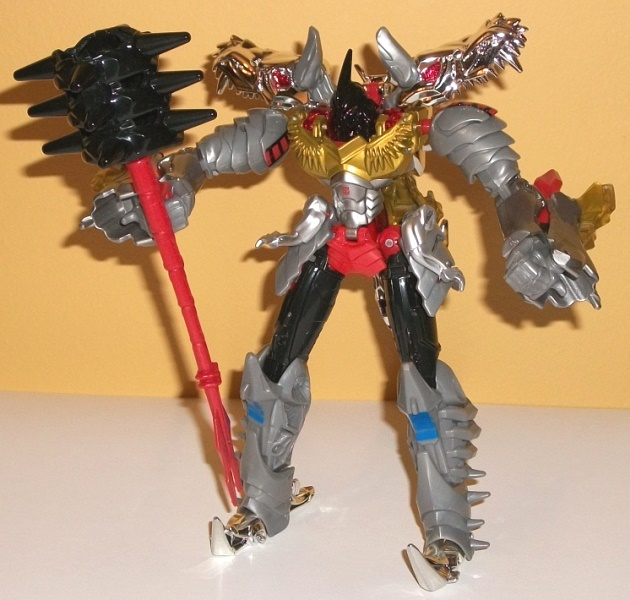
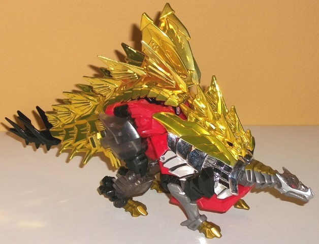
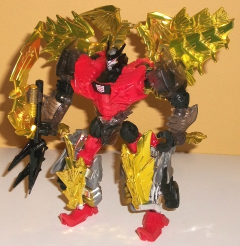
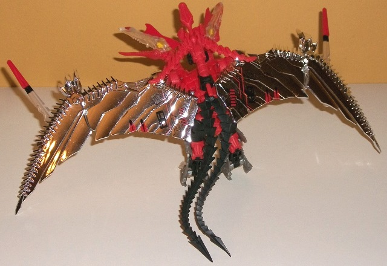
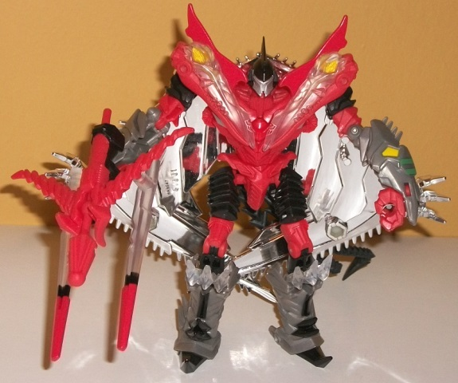
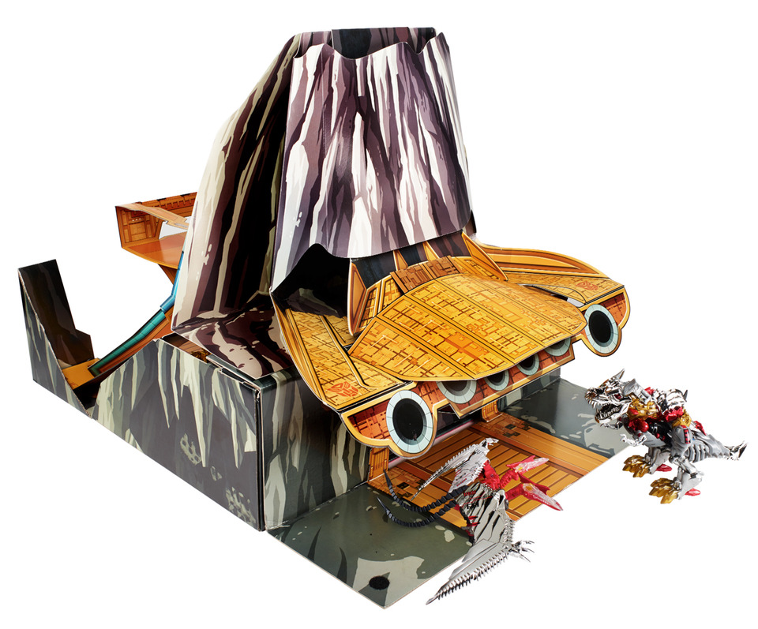
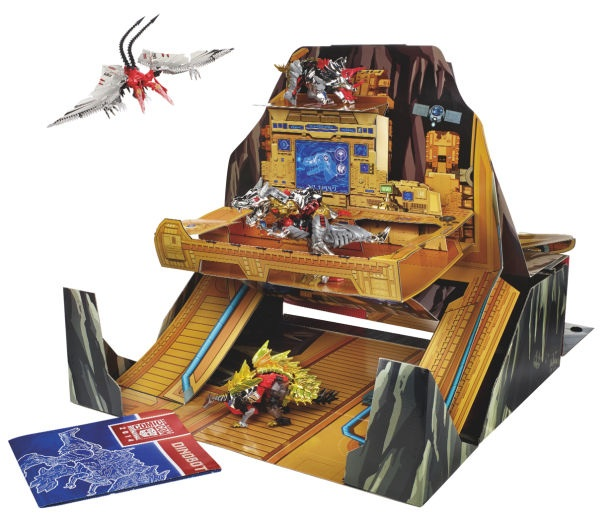

Dinobot
"G1 Redecos" 4-pack w/ Ark Playset (Also covers Platinum Edition*) [SDCC
2014 Exclusive]
Dinobot
"G1 Redecos" 4-pack w/ Ark Playset (Also covers Platinum Edition*) [SDCC
2014 Exclusive]
Allegiances
: Autobot
Set Price
: $160 (U.S.)
(NOTE: Because this set is composed of repaints,
this is not a full-blown review. This mainly covers any changes made to
the set and the color scheme, and merely compares it to the original versions
of these molds. For a review on the mass-release AoE deluxe Dinobot Slug,
go
here
. For a review on the mass-release AoE
voyager Grimlock, go
here
. For a review
on the mass-release AoE deluxe Snarl, go
here
.
For a review on the mass-release AoE deluxe Strafe, go
here
.)
Dinobot
Slug


Size
: Deluxe
Difficulty of Transformation
: Easy
Color Scheme
: Chrome silver, light
red, moderately light milky gray, black, and some chrome blue, tinted clear
plastic, dull metallic gold, light goldish brown, and silver
Individual Rating
: 8.0 (SDCC exclusive);
7.7 (Platinum Edition)*
Like the other AoE redecos
in this set, Slug's new colors are a (rough) translation of his G1 colors
onto his movie body. The best parts of Slug's new color scheme are the
chrome silver, which are prevalent on the beast head & head crest,
lower front beast legs, and stomach sides/robot arm pieces. It's quite
a nice shade, and while used a pretty good amount, it's not used SO much
that it gets gaudy-- there is some "regular" gray on the legs and upper
dino arms, and some black on the upper robot arms and legs, as well as
a bit of paint on the dino butt, chest, and the top ridge of the dino shoulders.
I did wish the gray plastic had a bit more of a metallic look with some
glitter in the mix, as it's a bit bland in comparison to most of Slug's
other colors, but it still complements the chrome silver alright. The black
serves as a nice dark color to contrast against all the lighter colors,
but unfortunately it only becomes prevalent in robot mode; in beast mode,
there's not enough of it. This is particularly noticeable because Slug's
red-- which is used a pretty good amount in both modes-- is a bit TOO light
when used in combination with the chrome silver. It particularly looks
out-of-place on Slug's jaw and horns, with its placement almost clown-ish
in some weird way. There is a fair amount of gold put into the mix as well,
thankfully, particularly on the back/bottom end of Slug, with his upper
tail and lower legs painted a nice shade of the color. His bendy-plastic
tail end piece is of a brownish gold shade-- basically the shade of gold
paint if it weren't as shiny. As opposed to beast mode like the G1 toy,
instead Slug's ROBOT head is partially transparent (tinted) plastic, with
a light red paint line along his visor. I would've preferred it done to
the dino head, but it still looks good. The bit of chrome blue on the front
legs is also nice little touches that helps add some more color variety,
but isn't used enough to effect the overall color scheme much-- I would've
liked a little more, as it's a fantastic color.
No mold changes have
been made to this version of Slug.
Grimlock


Size
: Voyager
Difficulty of Transformation
: Medium
Color Scheme:
Moderately light milky
gray, chrome silver, black, and some chrome red, clear plastic, metallic
gold, silver, moderately dark blue, moderately light red, and moderately
dull red
Individual Rating
: 8.9 (SDCC exclusive);
8.7 (Platinum Edition)*
Grimlock's color scheme
may deviate from his G1 appearance SLIGHTLY more than the other toys in
this set, but this is mostly because of the plastic color breakup, and
it's pretty much all GOOD deviations, anyways. The chrome silver on Grimlock
isn't nearly as prevalent as it is on Slug, with just his head, upper back,
and robot feet chromed. However, there is a REALLY nice chrome red added
to the sides of the back, as well as the robot waist and beast eyes, and
it is a wonderfully eye-catching color. There's some "regular" red on the
shade of the mace/tail and on some small connecting parts like the hips.
There is a pretty good amount of regular gray plastic on Grimlock-- again,
I wish it had been a bit more metallic in shade, but at least it's not
the very blah light milky gray that's used on a lot of movie TF toys. There's
a good amount of silver paint so that it's not chrome-or-nothing in terms
of the gray part of the spectrum, though; some of Grimlock's parts are
absolutely doused in it, like his lower legs, his t-rex arms, and his robot
abs. It's also broken up by a lot of colors, particularly in beast mode.
Black makes more of an appearance in robot mode-- Grimlock's robot head
looks REALLY nice being painted entirely black except for the red eyes--
but it still shows up in beast mode, with the mace/bulk of the tail being
black plastic, as well as the upper robot legs, which show through a fair
bit on the sides. There's some gold paint on Grimlock's robot chest, but
what's really special about most of the gold paint is that part of the
neck and the toes are actually clear plastic, but are painted gold from
the INSIDE, giving a look very much like certain transparent parts around
the neck of the G1 toy-- it's a really neat look. Finally, there's a few
paint apps that hearken back to the original G1 toy a bit, like the red
pattern on his beast mode hips/robot shoulders and the blue rectangles
on his robot knees.
No mold changes have
been made to this version of Grimlock.
Snarl


Size
: Deluxe
Difficulty of Transformation
: Medium
Color Scheme
: Chrome gold, light
red, clear tinted plastic, black, and some chrome silver, silver, and metallic
gold
Individual Rating
: 8.8 (SDCC exclusive);
8.3 (Platinum Edition)*
Snarl is the odd 'bot
out of the set in terms of chrome; most of his chrome is gold, as opposed
to the others' silver. Snarl does have some chrome silver at the sides
of the front part of his main body in dino mode, but the rest of it is
a be-autiful gold-- which I think is a pretty big deal, given how big of
a thing G1 Snarl's gold plates were to his look. Plus, I think chrome gold
just looks better than chrome silver. The chrome gold is fairly extensive
in beast mode, as is fitting given the aforementioned "G1 gold plates"
thing, but they break up significantly more in robot mode, with light red
and black becoming more apparent colors in that mode. The light red plastic
looks decent enough but really should've been just a TOUCH darker given
how generally light Snarl's color scheme is (because of all the chrome,
in particular). A little bit more paint on his robot chest and/or feet
would've been appreciated to break up the light red a little more, too.
Still, what black there is-- on the shoulders, elbows, tail, head, and
a few other connector bits-- looks quite good and serves as a nice dark
color to mostly help balance out all the lighter shades on Snarl. There's
also a fair amount of clear tinted plastic on Snarl, particularly on his
rear dino legs/robot arms and waist. This is likely an artifact of the
fact that the mass-release version of AoE Snarl had a large amount of clear
plastic, but the tinted look of the plastic looks good in the amounts that
it's used, and helps Snarl fit in a bit more with the whole "G1 homage"
look of the set. There's also a bit of clear plastic on the stegosaurus
head, though it's flanked by silver paint around the jaw-- one of the few
odd departures from G1 Snarl's look. There is some gold fade paint on the
neck, at least, though gold on the actual snout would've looked better,
methinks. There's also some gold paint on the dino toes-- again, except
for the red parts, Snarl is certainly not wanting for paint. The robot
facesculpt is painted similarly to his G1 face, being black with a silver
face and red optics, but it's not a great facesculpt, less so when it comes
to homaging G1 Snarl, so I'm still not a fan of the head.
No mold changes have
been made to this version of Snarl.
Strafe


Size
: Deluxe
Difficulty of Transformation
: Easy
Color Scheme
: Chrome silver, light
red, moderately light milky gray, and some black, yellow, clear plastic,
silver, and dull green
Individual Rating
: 8.1 (SDCC exclusive);
8.0 (Platinum Edition)*
Strafe's redeco is into
the rough colors of his G1 counterpart, Swoop. The biggest eye-grabbers
here are obviously the wings, which are completely covered in silver chrome.
It looks great, but I'm glad that Hasbro realized that-- by itself-- this
much silver chrome might look a bit too one-tone in beast mode. Thus, his
wings do have some mechanical details painted on them to help break up
all the silver. That said, these details are very much "G1-y" details and
rather simplistic in nature. I understand this is a "G1 homage" set, but
it's still a movie toy-- the details should have been more complex and
have fit in a bit more with the actual mold details themselves. In homage
to the G1 toy, the dino heads are clear plastic, being pretty much see-through
with some light red paint on the head crests and light red plastic on the
lower jaw. His dino feet and side missile/lance pieces are also clear plastic,
with the latter having a nice black stripe and light red tip to them, making
them look more "missile-y", for lack of a better term. In robot mode the
colors get more diverse, but like some of the other toys in this set, Strafe
has a bit too much light red on him, particularly on the body, which is
almost entirely light red except for two little silver paint apps on his
chest. Again, I wish this red had been just a titch darker. Still, the
amount of black to build contrast in robot mode is pretty nice, with the
shoulders, hips, and head cast in it, as well as some black paint on the
lower legs to break up the gray plastic there (this gray is the same shade
as on the other toys in this set-- a bit bland, but not quite as bland
as the "light milky gray" that's on far too many movie TFs). I do wish
the black on the head had been broken up a bit more, though-- the visor
and faceplate are both painted the same silver. The visor should have been
a blue color, and the headcrest should have been painted red like on the
G1 toy. As an homage to his G1 version, he has some yellow paint apps on
his lower arms and dull green stripes on those pieces as well-- the color
variation is appreciated, but neither color is used enough to really contribute
to the color scheme much.
No mold changes have
been made to this version of Strafe.
Ark
Playset


Individual Rating
: 3.5
The G1-style "crashed
Ark" playset is actually most of the packaging for the SDCC set that unfolds
from a box into what you see above. Visually, for a fold-out cardboard
playset, it LOOKS pretty cool; the front has admittedly limited play value,
but sure looks like a cardboard Ark crashed into the side of a mountain,
just like in the original cartoon. The back side has tons of cool little
details, such as ramps, Teletraan-1 screens, and a couple of "shelves"
to display your Dinobots on-- in theory, at least. However, in reality
Hasbro REALLY cheaped out on the Ark playset, which is already a shame,
but a DOUBLE shame given how much this set cost. Except for the base, the
cardboard is quite thin, with only the "main upper shelf" on the Ark interior
remotely approaching something stable; all the rest of the fold-out Ark
pieces are thin cardboard that's about the same strength as the OUTER packaging
used, for, say voyager-class toys; i.e., it's pretty flimsy and not difficult
at all to rip, and doesn't hold up much weight. Mine unfortunately was
glued in the wrong place and ripped with basically no resistance when I
opened it up; I'm going to assume that that wasn't widespread, but this
set is still a piece of low-budget crud. It looks nice, but not much else.
The SDCC "G1 Dinobots"
set is certainly not for everyone-- it's definitely for people who like
the movie aesthetic, but also like the G1 Dinobots and want the two in
a sort of "crossover" set-- not to mention that this set is substantially
more expensive than buying the molds individually at retail and thus only
for those fans who aren't quite as budget-minded. That said, if you like
chrome and translucent parts, more color on your movie molds, and have
the cash, they all look pretty good-to-fantastic, with only Strafe rating
slightly below his mass retail version, in my opinion. Just DON'T buy it
for the Ark playset-- you'll be mighty disappointed.
Platinum Edition "G1" Dinobots Bio:
Ferocious, at times unpredictable, and
almost unstoppable, the Dinobots are one of the most powerful groups of
warriors ever to roam the galaxy. Their love for battle is rivaled only
by their dislike for orders and those who give them. The Dinobots may not
always like the Autobots, but they're better allies than the Decepticons,
who make much better piles of molten scrap.
Dinobot Slug
: If he's not blowing
Decepticons up, this Dinobot can usually be found melting them down.
Grimlock
: One of the most respected
- and most feared - warriors the universe has ever known.
Slog
: What he lacks in smarts
he makes up in strength. Just make sure you don't get stomped.
Snarl
: An explosion-filled battlefield
is his idea of paradise.
Strafe
: Few bots can outmaneuver
this aerial acrobat.
*There was also a Toys "R" Us and online retailer-exclusive "Platinum
Edition" version of these toys released in 2015 that included the above
Dinobots as well as
Slog
, but without regular
packaging (i.e., no Ark). In general, the decos are the exact same, but
with A. Slightly fewer paint apps, B. Remolded heads to closely resemble
their G1 versions, and C. A slightly darker red plastic. Snarl also has
chrome silver instead of gold for the "Platinum Edition" set, an odd, very
G1-inaccurate, and rather bland decision. In general I prefer the SDCC
versions, as I feel the G1 headsculpts on movie bodies are ill-fitting
and the fewer paint apps make some of the toys look considerably more dull.
The darker red is a nice plus, but not enough to make up the "gap" caused
by the other negatives. That said, the SDCC versions can be a bit more
expensive, so if you can't quite put together the scratch for the SDCC
and (understandably) don't want the Ark set, the Platinum Edition versions
will do in a pinch.
(Ark Pics from
Hasbro
.)
Reviews by Beastbot
Back to Transformers:
Age of Extinction Index